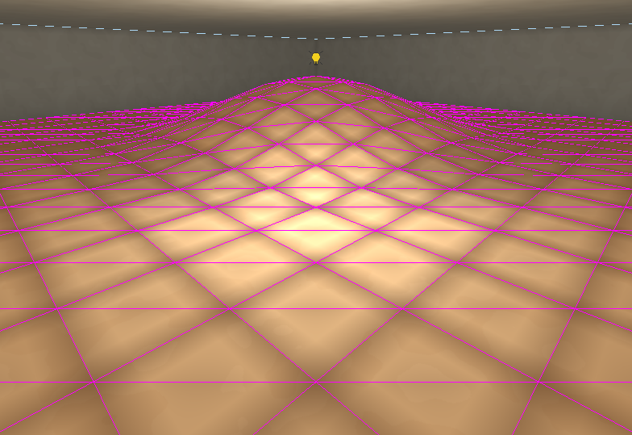

Terrain
Terrain is sculptable ground made of ordinary detail brushes. Converting a brush cuts it into a grid of cells, each cell into two triangular columns (prisms). The tops of the prisms meet at the grid points, and sculpting moves those points up and down.
How to convert and sculpt: Terrain in the Editor section.

What terrain is
- Every prism is a detail brush, whatever the brush it was converted from was. Terrain is dressing inside a room: it carves nothing and makes no openings. See The carved world.
- It is drawn, collided with, walked on, lit and saved like any other detail.
- The walls between neighbouring prisms are hidden, so the ground reads as one surface.
- The heights live on the prisms and nowhere else. There is no separate heightmap.
Put terrain inside a room. Carve the room tall enough for the ground you intend to raise.
Which brushes can be converted
A brush can become terrain when:
- It is solid or detail. Air is a hole in the world, and ground is not.
- It has a flat top facing straight up.
- No other face points even slightly upward. Sides are upright or face partly down.
- It does not belong to an entity, and is not terrain already.
Converting replaces the brush with its prisms, as detail, on the same layer.
A room's own air brush is refused for the first of those reasons: terrain is solid, so converting the air would have replaced the room with ground. Convert a solid or detail slab standing in the room instead.
Limits
| Limit | Why |
|---|---|
| Flat-topped columns only | Each prism's top is one flat triangle over its footprint. No overhangs, caves or vertical cliffs within the terrain. |
| At most 64 cells a side | A larger footprint gets larger cells instead. More would be tens of thousands of brushes. |
| Faceted | Each cell is two flat triangles. A finer cell size gives a smoother surface and more brushes. |
| At least 1 unit thick | Lowering stops before a prism's top reaches its bottom. |
The cell size is set when converting, 32 units by default. To change it, convert again from a new brush.